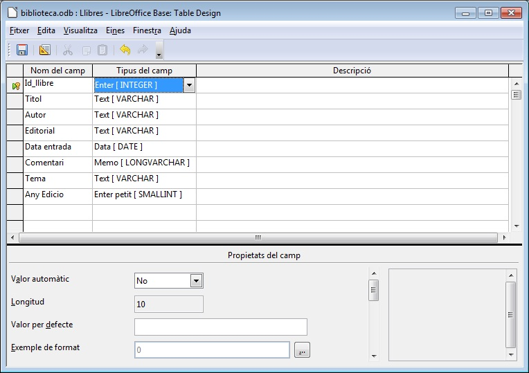

Dintre d'aquesta imatge podem veure a la part inferior de la finestra
l'apartat de les propietats del camp. Les propietats poden ser
diferents segons el tipus de camps de què es tracti.

Per saber quina funció té cada propietat fent un clic a sobre de
qualsevol cel·la de dades podreu veure, a la part dreta, una descripció
de la mateixa.
Valor automàtic: Aquesta propietat només la tenen els camps de tipus Enter, i permet en cas de que estigui activada que l’usuari no hagi d’introduir el valor al camp, sinó que es generarà de forma automàtica, començant pel 0, i continuant pel 1,2,3… Si es volgués que la numeració comencés per 1, caldria triar l'opció NO. Es necessita una entrada: En cas de que se li assigni el valor Sí, OpenOffice Base no donarà per vàlid un registre en la taula si el camp no té un valor assignat.
Longitud: És seleccionable per camps de tipus Text, i permet indicar la llargària en caràcters que podrà tenir com a màxim el valor en aquest camp.
Valor per defecte: Si la major part dels llibre que tenim són de Tema “Poesia”, doncs posarem aquesta paraula en aquesta propietat i d’aquesta manera ens estalviarem haver de tornar-la a escriure. Evidentment en cas que no sigui el valor que es demana per un determinat registre es pot esborrar el valor i posar el que correspongui.
Exemple de format:
Per modificar el tipus de format s'haurà de fer clic sobre:
En cas de que sigui un camp de tipus Text podrem modificar l'alineació, tal com es pot veure a la imatge següent:
Per camps de tipus numèric,
veiem que podem fer molts canvis de format perquè surti tal com ens agrada. Podem modificar aspectes com: Nombre de decimals, Zeros inicials, Negatiu en vermell i Separadors de milers, etc.
Si mirem la imatge anterior, podem veure que el camp Any Edicio té la propietat Separadors de milers activada.
Practiqueu seleccionant diferents categories (primera columna de l'esquerra de la imatge anterior) i un cop triada una categoria concreta, a la part central de la mateixa finestra, mostra diversos formats (espai “format” de la mateixa imatge) i podreu veure a un quadret situat a la part dreta com es mostraria el valor segons les opcions escollides en els dos espais anteriorment esmentats(quadret de la “mostra preliminar”).
Heu d'establir els següents valors a les propietats del camp Any Edicio, situant les opcions tal com mostra la imatge següent:

|
|

|
|